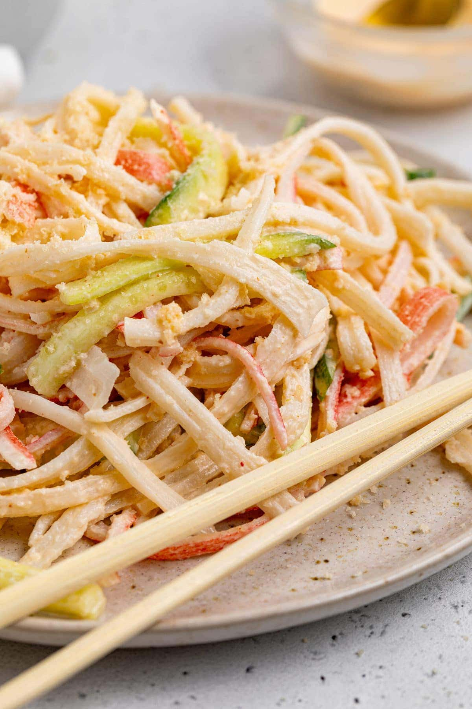

Kani Salad!
Healthy. Fresh. Delicious.
Ingredients
- Kani (Imitation Crab meat)
- Cucumber
- Sriracha
- Kewpie Mayo
- Sesame Seeds (Optional)
- Carrots (Optional)
Instructions
- Take your cucumber and cut into small strips, about 2 inches long.
- Peel or slice your kani into strips
- Take your carrots if you decide to add carrots and make them into strips too
- Combine all ingredients into a bowl
- Add sriracha and mayo to taste
- Mix it well
- Enjoy!